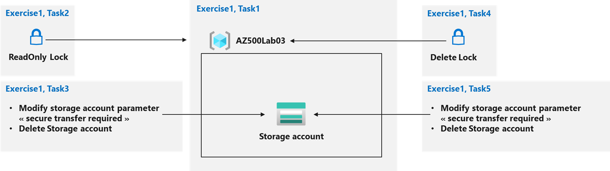

Lab 03: Resource Manager Locks
Student lab manual
Lab scenario
You have been asked to create a proof of concept showing how resource locks can be used to prevent accidental deletion or changes. Specifically, you need to:
-
create a ReadOnly lock
-
create a Delete lock
For all the resources in this lab, we are using the East US region. Verify with your instructor this is the region to use for class.
Lab objectives
In this lab, you will complete the following exercise:
- Exercise 1: Resource Manager Locks
Resource Manager Locks diagram

Instructions
Exercise 1: Resource Manager Locks
Estimated timing: 20 minutes
In this exercise, you will complete the following tasks:
- Task 1: Create a resource group with a storage account.
- Task 2: Add a ReadOnly lock on the storage account.
- Task 3: Test the ReadOnly lock.
- Task 4: Remove the ReadOnly lock and create a Delete lock.
- Task 5: Test the Delete lock.
Task 1: Create a resource group with a storage account.
In this task, you will create a resource group and storage account for the lab.
-
Sign-in to the Azure portal
https://portal.azure.com/.Note: Sign in to the Azure portal using an account that has the Owner or Contributor role in the Azure subscription you are using for this lab.
-
Open the Cloud Shell by clicking the first icon in the top right of the Azure Portal. If prompted, select PowerShell and Create storage.
-
Ensure PowerShell is selected in the drop-down menu in the upper-left corner of the Cloud Shell pane.
-
In the PowerShell session within the Cloud Shell pane, run the following to create a resource group (verify with your instructor regarding the value of the location parameter):
New-AzResourceGroup -Name AZ500LAB03 -Location 'EastUS' Confirm Provided resource group already exists. Are you sure you want to update it? [Y] Yes [N] No [S] Suspend [?] Help (default is "Y"): Y -
In the PowerShell session within the Cloud Shell pane, type Y and press the Enter key.
-
In the PowerShell session within the Cloud Shell pane, run the following to create a storage account in the newly created resource group:
New-AzStorageAccount -ResourceGroupName AZ500LAB03 -Name (Get-Random -Maximum 999999999999999) -Location EastUS -SkuName Standard_LRS -Kind StorageV2Note: Wait until the storage account is created. This might take a couple of minutes.
-
Close the Cloud Shell pane.
Task 2: Add a ReadOnly lock on the storage account.
In this task, you will add a read only lock to the storage account. This will protect the resource from accidental deletion or modification.
-
In the Azure portal, in the Search resources, services, and docs text box at the top of the Azure portal page, type Resource groups and press the Enter key.
-
On the Resource groups blade, select the AZ500LAB03 resource group entry.
-
On the AZ500LAB03 resource group blade, in the list of resources, select the new storage account.
-
In the Settings section, click the “Locks” icon.
-
Click + Add and specify the following settings:
Setting Value Lock name ReadOnly Lock Lock type Read-only -
Click OK.
Note: The storage account is now protected from accidental deletion and modification.
Task 3: Test the ReadOnly lock
-
In the Settings section of the storage account blade, click Configuration.
-
Set the Secure transfer required option to Disabled and then click Save.
-
You should be able to spot a notification stating Failed to update storage account.
-
Click the Notifications icon in the toolbar at the top of the Azure portal and review the notification, which will resemble the following text:
“Failed to update storage account ‘xxxxxxxx’. Error: The scope ‘xxxxxxxx’ cannot perform write operation because following scope(s) are locked: ‘/subscriptions/xxxxx-xxx-xxxx-xxxx-xxxxxxxx/resourceGroups/AZ500LAB03/providers/Microsoft.Storage/storageAccounts/xxxxxxx’. Please remove the lock and try again”
-
Return the the Configuration blade of the storage account and click Discard.
-
On the storage account blade, select Overview and, on the Overview blade, click Delete.
-
On the Delete storage account blade, type in the name of the storage account to confirm that you intend to proceed and then click Delete.
-
Review the newly generated notification, which will resemble the following text:
“Failed to delete storage account ‘xxxxxxx’. Error: The scope ‘xxxxxxx’ cannot perform delete operation because following scope(s) are locked: ‘/subscriptions/xxxx-xxxx-xxxx-xxxx-xxxxxx/resourceGroups/AZ500LAB03/providers/Microsoft.Storage/storageAccounts/xxxxxxx’. Please remove the lock and try again.”
Note: You have now verified that a ReadOnly lock will stop accidental deletion and modification of a resource.
Task 4: Remove the ReadOnly lock and create a Delete lock.
In this task, you remove the ReadOnly lock from the storage account and create a Delete lock.
-
In the Azure portal, navigate back to the blade displaying properties of the newly created storage account.
-
In the Settings section , select Locks.
-
On the Locks blade, click on the Delete icon on the far right of the ReadOnly Lock entry.
-
Click + Add and specify the following settings:
Setting Value Lock name Delete Lock Lock type Delete -
Click OK.
Task 5: Test the Delete lock.
In this task, you will test the Delete lock. You should be able to modify the storage account, but not delete it.
-
In the Settings section of the storage account blade, click Configuration.
-
Set the Secure transfer required option to Disabled and then click Save.
Note: This time, the change should be successful.
-
On the storage account blade, select Overview and, on the Overview blade, click Delete.
-
Review the notification that resembles the following text:
‘xxxxxx’ can’t be deleted because this resource or its parent has a delete lock. Locks must be removed before this resource can be deleted”
Note: You have now verified that a Delete lock will allow configuration changes but stop accidental deletion.
Note: By using Resource Locks you can implement an extra line of defense against accidental or malicious changes and/or deletion of the most important resources. Resource locks can be removed by any user with the Owner role, but doing so requires a conscious effort. Locks supplement Role Based Access Control.
Results: In this exercise, you learned to use Resource Manager locks to protect resources from modification and accidental deletion.
Clean up resources
Remember to remove any newly created Azure resources that you no longer use. Removing unused resources ensures you will not incur unexpected costs.
-
In the Azure portal, open the Cloud Shell by clicking the first icon in the top right of the Azure Portal. If prompted, click Reconnect.
-
In the PowerShell session within the Cloud Shell pane, run the following to remove the delete lock:
$storageaccountname = (Get-AzStorageAccount -ResourceGroupName AZ500LAB03).StorageAccountName $lockName = (Get-AzResourceLock -ResourceGroupName AZ500LAB03 -ResourceName $storageAccountName -ResourceType Microsoft.Storage/storageAccounts).Name Remove-AzResourceLock -LockName $lockName -ResourceName $storageAccountName -ResourceGroupName AZ500LAB03 -ResourceType Microsoft.Storage/storageAccounts -Force -
In the PowerShell session within the Cloud Shell pane, run the following to remove the resource group:
Remove-AzResourceGroup -Name "AZ500LAB03" -Force -AsJob -
Close the Cloud Shell pane.